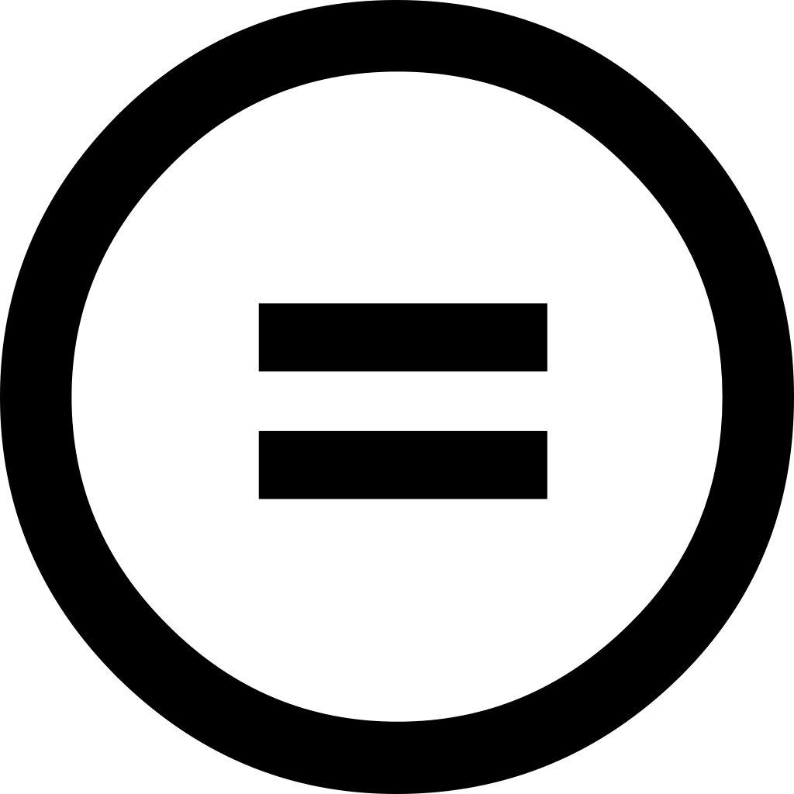

Propiedad intelectual
Concepto de "Propiedad Intelectual"
La propiedad intelectual es el conjunto de derechos que corresponden a los autores y a otros titulares (artistas, productores, organismos de radiodifusión...) respecto de las obras y prestaciones fruto de su creación.
Al Ministerio le corresponde proponer las medidas, normativas o no, para lograr la adecuada protección de la propiedad intelectual.
Derechos de propiedad intelectual
Derechos morales
Frente a los sistemas de corte anglosajón, la legislación española es claramente defensora de los derechos morales, reconocidos para los autores y para los artistas intérpretes o ejecutantes. Estos derechos son irrenunciables e inalienables, acompañan al autor o al artista intérprete o ejecutante durante toda su vida y a sus herederos o causahabientes al fallecimiento de aquellos. Entre ellos destaca el derecho al reconocimiento de la condición de autor de la obra o del reconocimiento del nombre del artista sobre sus interpretaciones o ejecuciones, y el de exigir el respeto a la integridad de la obra o actuación y la no alteración de estas.
Derechos de carácter patrimonial
Derechos relacionados con la explotación de la obra que a su vez se subdividen en derechos exclusivos y en derechos de remuneración:
- Los derechos exclusivos son aquellos que permiten a su titular autorizar o prohibir los actos de explotación de su obra o prestación protegida por el usuario, y a exigir de este una retribución a cambio de la autorización que le conceda.
- Los derechos de remuneración, a diferencia de los derechos exclusivos, no facultan a su titular a autorizar o prohibir los actos de explotación de su obra o prestación protegida por el usuario, aunque sí obligan a este al pago de una cantidad dineraria por los actos de explotación que realice, cantidad esta que es determinada, bien por la ley o en su defecto por las tarifas generales de las entidades de gestión.
Derechos compensatorios, como el derecho por copia privada que compensa los derechos de propiedad intelectual dejados de percibir por razón de las reproducciones de las obras o prestaciones
protegidas para uso exclusivamente privado del copista.
Derechos de autor y copyright
Conceptos de derechos de autor y copyright
Los derechos de autor o copyright son una modalidad de protección del conocimiento científico. En concreto, describen los derechos de los creadores sobre sus obras literarias, artísticas o científicas, tanto derechos patrimoniales como morales.
Las características más importantes de esta modalidad de propiedad intelectual son:
- Objeto protegido: obras originales literarias, artísticas o científicas (incluidos programas de ordenador y bases de datos). La protección del Derecho de Autor abarca únicamente las expresiones, no las ideas, métodos ni conceptos.
- Tipo de protección: proporciona al creador original de la obra y a sus herederos capacidad legal para detentar el derecho exclusivo a utilizar o autorizar a terceros la utilización de la obra en condiciones convenidas de común acuerdo, vender los derechos sobre sus obras a terceras partes si así lo considera, y reivindicar la autoría de la obra y el derecho a oponerse a modificaciones de la misma que puedan atentar contra la reputación del creador.
- Duración: toda la vida del autor más 70 años después de su muerte. No obstante, cada legislación nacional puede fijar plazos de protección más largos.
- Tipo: No es necesario el registro. La protección surge automáticamente al hecho de creación de la obra, conforme al Convenio de Berna.
- Organismo Competente: la mayoría de países cuenta con un sistema de registro y depósito facultativo de obras, aunque su registro es voluntario.
¿Cuándo pasa una obra a ser de dominio público?
Según la actual normativa española, los derechos de explotación de una obra subsisten 70 años después de la muerte del autor y se computan desde el 1 de enero del año siguiente al de la muerte o declaración de su fallecimiento.
Licencias de software
Concepto de licencia de software
La licencia de software es la autorización que otorga un autor o autores que permite el derecho a terceras personas de utilizar su creación o recurso.
El autor ostenta el derecho intelectual exclusivo y lo concede a otros como un permiso, en este caso una licencia de software. Existen diferentes tipos de licencia, los cuales, entre otros, autorizan el uso, modificación o distribución del programa.
A continuación, los tipos de licencia de software que se utilizan con mayor frecuencia:
Freeware: es la licencia que se otorga con los programas gratuitos, sin límites ni en el tiempo ni en la funcionalidad del programa.
Shareware y Trial: estos programas pueden ser utilizados de manera gratuita pero comúnmente son versiones de prueba, lo que el tiempo de uso es limitado. Una vez finalizado el tiempo de prueba hay que comprar el programa completo o desinstalarlo.
Adware: suelen ser programas shareware, pero al instalarlos de forma automática nos muestra publicidad; en ocasiones al ejecutarlo y en otras solamente al instalarle. Cuando se compra la versión de la licencia completa normalmente se elimina la publicidad.
Software libre: en este el autor entrega el programa para que sea usado, modificado, copiado y distribuido. Normalmente estos sirven de base para otros programas que si pueden ser de pago pero que suelen ser baratos.
Licencias Creative Commons
¿Qué es Creative Commons?
Las licencias y herramientas de derechos autorales Creative Commons, forjan un equilibrio dentro del escenario tradicional de «todos los derechos reservados» que crean las leyes de derechos autorales. Esas herramientas les dan a todas, desde creadoras individuales hasta grandes compañías e instituciones, una vía simple y estandarizada para otorgar permisos de derechos autorales a sus obras creativas. La combinación de estas herramientas y las usuarias es un procomún digital vasto ycreciente, una fuente de contenidos que pueden ser copiados, distribuidos, editados, remezclados, y usados como base para crear, todo dentro de los límites de las leyes de derecho autoral.
Tipos de licencias Creative Commons
 Reconocimento (Attribution)
Reconocimento (Attribution)
En cualquier uso o explotación que se haga de la obra autorizada por la licencia Creative Commons hará falta reconocer siempre la autoría de dicha obra. En efecto, esta condición se exige en todas las licencias Creative Commons y no puede ser excluida por el autor, pues el reconocimiento de la autoría es un derecho moral irrenunciable por parte del autor y todas las licencias deben respetarlo y aplicarlo siempre.
 No Comercial (Non commercial)
No Comercial (Non commercial)
Se prohíbe que la obra sea utilizada con fines comerciales (por ejemplo, el hilo musical en un negocio). Esta condición afecta al usuario, pero obviamente no afecta al autor que sigue siendo en todo momento propietario del copyright o derechos de autor; por tanto, esta condición no impide que al autor pueda comercializar con su obra.
Sin obras derivadas (No Derivate Works)
La autorización para explotar la obra no incluye la transformación para crear una obra derivada (por ejemplo, traducir una obra literaria).
 Compartir igual (Share alike)
Compartir igual (Share alike)
La explotación autorizada incluye la creación de obras derivadas siempre que mantengan la misma licencia al ser divulgadas.
El autor puede escoger cómo combina estas condiciones; es decir, tiene un margen de libertad para reducir o ampliar el alcance de la autorización que da para el uso de su obra: por ejemplo, el autor puede decidir excluir los usos comerciales de su obra o la modificación de ésta, o si la permite sólo bajo la condición de que la obra resultante quede sujeta a la misma licencia.
Licencias
Reconocimiento
Esta licencia permite cualquier explotación de la obra, incluyendo una finalidad comercial, así como la creación de obras derivadas, la distribución de las cuales también está permitida sin ninguna restricción, con la única condición de que se haga referencia expresa al autor, es decir, que aparezca su nombre en cualquier uso o acto de explotación que se haga de la obra.
Reconocimiento - No Comercial (by-nc)
Esta licencia permite la generación de obras derivadas siempre que no se haga un uso comercial de las mismas. Tampoco se puede utilizar la obra original con finalidades comerciales.
Reconocimiento - No Comercial - Compartir igual (by-nc-sa)
Esta licencia no permite un uso comercial de la obra original ni de las posibles obras derivadas. Además, la distribución de estas obras derivadas se debe hacer con una licencia igual a la que regula la obra original.

Reconocimiento - No Comercial - Sin Obra Derivada (by-nc-nd)
Esta licencia no permite la generación de obras derivadas ni hacer un uso comercial de la obra original, es decir, sólo son posibles los usos y finalidades que no tengan carácter comercial. Esta es la licencia Creative Commons más restrictiva.
Reconocimiento - Compartir Igual (by-sa)
Esta licencia permite el uso comercial de la obra y de las posibles obras derivadas, pero la distribución de éstas se debe hacer con una licencia igual a la que regula la obra original, es decir, la obra derivada que se lleve a cabo a partir de la obra original deberá ser explotada bajo la misma licencia.

Reconocimiento - Compartir Igual (by-sa)
Esta licencia permite el uso comercial de la obra pero no la generación de obras derivadas, es decir, que la obra sólo puede ser usada en su formato original, no cabe su transformación.

Copyleft
Concepto de Copyleft
El copyleft se practica al ejercer el derecho de autor que consiste en permitir la libre distribución de copias y versiones modificadas de una obra u otro trabajo, exigiendo que los mismos derechos sean preservados en las versiones modificadas. La efectividad de ejercerlo puede depender de la legislación particular de cada país, pero en principio se puede utilizar para programas informáticos, obras de arte, cultura, ciencia, o cualquier tipo de obra o trabajo creativo que sea regido por el derecho de autor.
El término surge en las comunidades de software libre como un juego de palabras en torno a copyright: "derecho de autor", en inglés (literalmente: "derecho de copia"). Se puede traducir por "izquierdo de autor", aunque esta propuesta no refleja otro sentido de left en inglés: pretérito del verbo dejar o permitir. Se considera que una licencia libre es copyleft cuando además de otorgar permisos de uso, copia, modificación y redistribución de la obra protegida, contiene una cláusula que impone una licencia similar o compatible a las copias y a las obras derivadas.
Sus partidarios lo proponen como alternativa a las restricciones que imponen las prácticas tradicionales de los editores y de la industria del entretenimiento al ejercer los derechos patrimoniales que detienen y gestionan para los autores, a la hora de autorizar hacer, modificar y distribuir copias de una obra determinada. Se pretende así ofrecerle a un autor la posibilidad de liberar una obra, escogiendo una licencia libre que permita su utilización, copia, modificación y redistribución, al mismo tiempo que, mediante el copyleft, se garantiza que se preserven estas libertades para cualquier receptor de una copia, o de una versión derivada